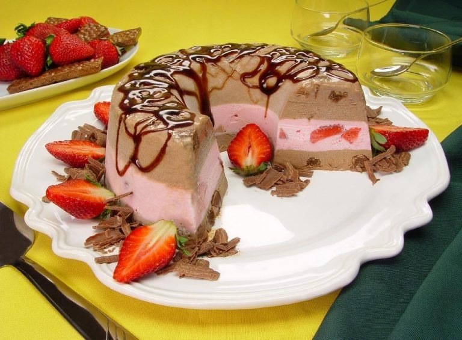

Doces · Tortas e bolos
Bolo de sorvete com cerejas

Ingredientes
- 2 xícaras de sorvete crocante comprado pronto
- Cerca de 200 g de biscoitos champanhe
- Licor Cointreau
- 2 xícaras de sorvete de baunilha ou creme comprado pronto
- ⅓ xícara de chocolate cobertura ralado
- 2 xícaras de creme de leite fresco
- Cerca de 1 ½ xícara de cerejas em calda escorridas ou cristalizadas
Modo de preparo
- Forre o fundo de uma fôrma quadrada com capacidade de cerca de 1 ½ litro com papel-manteiga bem esticado para não formar pregas.
- Espalhe uma camada de sorvete crocante e cubra com uma camada uniforme de biscoitos champanhe molhados no licor.
- Por cima, coloque o sorvete de baunilha (ou creme). Leve à geladeira para firmar e congele.
- Leve o chocolate ralado ao fogo brando para derreter. Deixe esfriar.
- Bata o creme de leite até ficar firme e incorpore o chocolate derretido e frio. Congele.
Observação
Quando você for deixar o chocolate derretido esfriar, coloque-o próximo a uma chama para que ele não endureça novamente. Congelamento: cubra o bolo de sorvete com plástico e leve ao freezer até congelar; passe para um saco plástico, retire o ar e vede bem; etiquete e congele. Congele o creme de chocolate num recipiente rígido bem vedado e etiquetado. Descongelamento: descongele o bolo e o creme na geladeira até amolecerem um pouco. Decore a borda do bolo com o creme, usando o saco de confeitar, e a superfície com as cerejas; sirva em seguida.